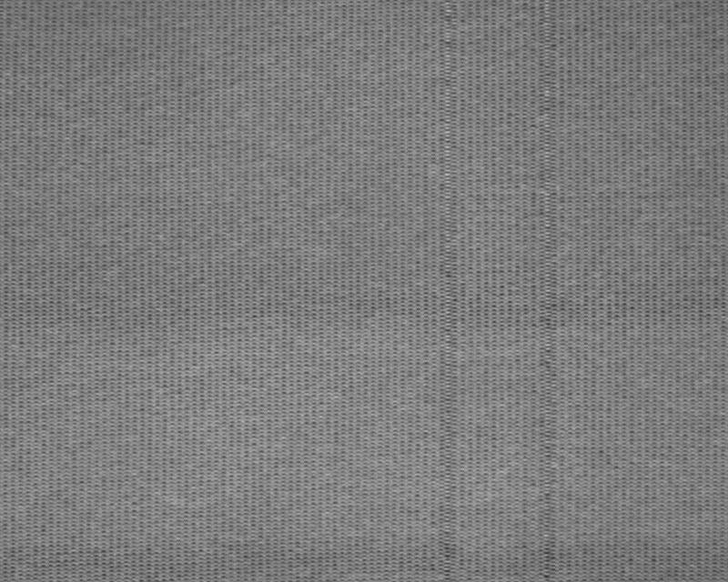

HUMAN IN THE LOOP
AI가 찾은 후보,
마지막 확인은 당신에게.
새 사진을 받고, 확인할 사진을 골라 검수 결과를 남겨보세요.
- 01 새 사진 수신
- 02 AI 후보 확인
- 03 담당자 검수
- 04 기록·후속 검토
수신한 구간대기 중
현재 검수 요청—
담당자 확인0장
적용 중인 검사 기준 기존 기준 유지
준비된 실제 직물 사진으로 시작합니다. ‘새 구간 받기’를 눌러주세요.
READY FOR INSPECTION모든 사진을 보기보다,
모든 사진을 보기보다,
확인이 필요한 곳부터.
AI가 이상 점수와 시간 간격으로 고른 사진을 확인하고
정상·결함·판단 보류를 직접 선택합니다.
NEW PHOTOSAI → 사람의 확인


실제 촬영 사진확인 결과를 직접 선택하세요 ↗
사진을 불러오지 못했습니다. 다시 선택해 주세요.
DINOv2 이상 점수—
경보선 0.4708판정은 담당자가 확인합니다.
REVIEW RECORD
확인 결과가 기록되었습니다.
정상 확인0장
결함 확인0장
판단 보류0장
미요청 후보0장
| 검수 후보 | 사진 | AI 점수 | 담당자 판단 | 검수 메모 | 공개 정답 |
|---|
AFTER HUMAN REVIEW
확인 결과를 다음 기준 검토로.
정상으로 확인한 사진을 기준 후보 검토용 목록에 모을 수 있습니다.
이 기록은 지금 선택한 담당자 판단입니다. 공개 정답과 구분해 저장하며, 실제 생산 설비에 적용하지 않습니다.